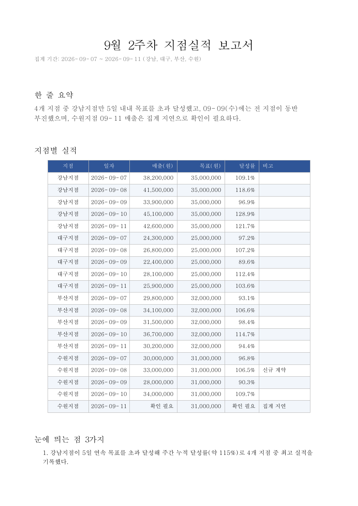

웹페이지는 만들었습니다. 이번엔 내 PC의 파일을 다룹니다.

M1
나만의 웹페이지

M2
주간 실적 통합표
지금 여기

M3
회의록 PDF

M4
PDF 분석 대시보드

M5
아이디어 기획서 한 장
지점별로 온 한 주 실적을 규칙대로 합치고, 주간 실적 보고서로 만들어 냅니다.
① 지점별 주간 실적 4개 → 통합표 하나

② 통합표 → 주간 실적 보고서 PDF
데스크탑 실습에 쓸 개인 API 키를 먼저 만들어 둡니다.
H Chat Pro 왼쪽 메뉴 Personal API Key → OTP 인증 → 키 생성
 1
1
① 왼쪽 메뉴 > Personal API Key

② OTP 인증 후 키 생성
만들자마자 메모장에 붙여넣어 두세요. 키는 개인용이며 다른 사람과 공유하지 않습니다.
쉬는 시간에 받아 둔 H Chat 데스크탑을 실행합니다. 아래 세 가지가 보이면 준비 끝입니다.

설치하고 실행한 첫 화면
- 창이 뜬다브라우저가 아니라 프로그램 창으로 열립니다
- 로그인이 되어 있다Pro에서 쓰던 계정 그대로입니다
- 대화창과 모델 이름이 보인다생김새는 Pro와 거의 같습니다 — 다른 건 안쪽입니다
여기서 막히면 뒤 실습을 전부 못 합니다.
같은 문장을 같은 모델로 두 곳에서 실행했습니다 — “오늘 뉴스 정리해서 pdf로 뽑아줘”

① H Chat Pro — “PDF 파일 자체를 만들 수는 없습니다”
② H Chat 데스크탑 — PDF 파일이 만들어짐
두뇌가 얼마나 똑똑한지라면, Effort는 그 두뇌로 얼마나 오래 생각할지입니다.
같은 두뇌에게 “쓱 훑어봐” 하는 것과 “꼼꼼히 들여다봐” 하는 것의 차이입니다.

모델 이름 옆 Effort > 낮음 · 중간 · 높음
낮음
빠르게 훑고 답합니다 — 단순 정리
중간
보통 업무에 무난합니다 — 기본값
높음
오래 생각하고 답합니다 — 복잡한 판단
화면 왼쪽 위 폴더 아이콘 하나로 정합니다.
- 폴더 아이콘을 누릅니다입력창 위 + 옆
- 최근에 쓴 폴더는 목록에서 바로docs · Downloads 처럼 경로까지 같이 보입니다
- 목록에 없으면 [다른 폴더 선택]탐색기가 열리면 원하는 폴더를 고릅니다

맨 아래가 [다른 폴더 선택]
M1에서 만든 프로젝트 — 데스크탑에서는 그 자리를 폴더 하나가 대신합니다.

H Chat Pro
프로젝트 안에 자료와 규칙을
→
같은 일을
내 폴더에서

H Chat 데스크탑
결과가 파일로 남습니다
①
작업 폴더
실적 폴더를 놓는다
②
폴더 지침
합치는 규칙을 한 번
③
합치기
네 파일이 표 하나로
④
보고서
그대로 PDF까지
- 탐색기에서 C:\work\m2 폴더를 만듭니다 오늘 M2에서 만드는 것이 전부 여기 쌓입니다
- 배포받은 ‘9월 2주차 실적’ 폴더를 통째로 그 안에 넣습니다폴더 안에 지점별 CSV 4개(강남 · 수원 · 부산 · 대구)가 들어 있습니다 — 바로 뒤 합치기 실습에서 씁니다
- 데스크탑 입력창의 폴더 아이콘을 눌러 그 폴더를 고릅니다
- 제대로 잡혔는지 한 줄로 확인합니다
지금 작업 폴더가 어디야? 하위 폴더까지 포함해서 어떤 파일이 있는지 알려줘.

입력창 폴더 아이콘 > 최근 폴더 또는 [다른 폴더 선택]
이렇게 나오면 성공
폴더 경로와 함께 ‘9월 2주차 실적’ 폴더 안의 CSV 4개를 그대로 읽어 줍니다.
폴더 경로와 그 안의 파일 구조를 그대로 읽어 주면 제대로 잡힌 것입니다.

① 9월 2주차 실적 폴더 안의 CSV 4개까지 읽습니다

② 오른쪽 작업 폴더 > [지침] 을 누르면 열리는 창
스킬은 ‘이 일은 이렇게 하는 것’을 적어둔 레시피 한 장입니다.
요리책처럼 필요할 때만 꺼내 씁니다. 매번 설명하지 않아도 그 방법대로 해 줍니다.

① / 를 치면 쓸 수 있는 스킬이 뜬다

② 설정 > 스킬에서 켜고 끌 수 있다
앞에서 만든 통합표를 그대로 두지 말고, 보고할 수 있는 문서로 만듭니다.
앞에서 만든 통합표를 바탕으로 9월 2주차 실적 보고서를 만들어줘.
표와 함께 한 줄 요약과 눈에 띄는 점 3가지를 넣고,
PDF 파일로 저장해줘.
폴더에 PDF가 생깁니다
M1에서 하던 것과 똑같은 순서입니다. 항목 이름만 다릅니다.
- hyundai.mincoding.co.kr 접속 — 상단 [문제목록]
- [H Chat Desktop 실습] 주간 실적 보고서 만들기 열기목록의 Hyundai_03 입니다
- 도구모음 [파일 업로드]로 방금 만든 보고서 PDF를 첨부하고 [등록]폴더 지침에 어떤 규칙을 적었는지 한 줄 함께 적습니다

목록에서 Hyundai_03 를 고릅니다
오늘 만든 결과물 세 개 — 이름만 바꾸면 그대로 내 업무입니다.
폴더 정리
매주 쌓이는 부서 자료를
열어보지 않고 요약표로
표 합치기
양식이 제각각인 협력사 · 지점 자료를
정산표 하나로
문서 만들기
정리한 내용을 옮겨 적지 않고
보고서 PDF로 바로